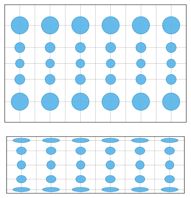
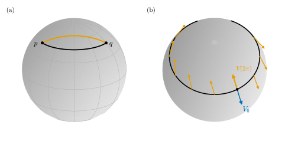
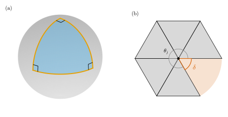

0.5 Intrinsic Geometry: Geodesics and Gauss–Bonnet
Goals
- Theorema Egregium이 무엇을 말하는지, 그리고 왜 sphere를 왜곡 없이 평면에 펼 수 없는지 설명할 수 있다.
- geodesic을 “surface 위에서 가장 곧은 곡선”으로 이해하고, sphere와 cylinder의 geodesic을 말할 수 있다.
- parallel transport와 holonomy를 circle of latitude에서 계산하고 curvature와 연결할 수 있다.
- Gauss–Bonnet theorem의 두 형태(geodesic triangle, 닫힌 surface)와 mesh의 angle defect판을 쓸 수 있다.
Prerequisites
- Section 0.3: first fundamental form(Definition 0.3.5), isometry와 conformal map, equirectangular image(Figure 0.3.3)
- Section 0.4: Gaussian curvature와 mean curvature(Definition 0.4.5, Example 0.4.6)
- Section 0.2: rotation index theorem(Theorem 0.2.7)
Motivation
Section 0.4는 질문 하나를 남겼다. mean curvature \(H\)는 평면(\(0\))과 cylinder(\(-1/(2r)\))에서 달라서 intrinsic이 아니었다. Gaussian curvature \(K\)는 둘 다 \(0\)이었다. 우연인가?
\(K\)의 정의에는 normal vector \(\mathbf{N}\)이 들어 있으므로, \(K\)는 surface가 공간 안에서 휜 모양에 달린 extrinsic한 양처럼 보인다. 그런데 Gauss는 \(K\)가 surface 안에서 잰 길이만으로 정해진다는 것을 발견하고 이 결과를 Theorema Egregium(빼어난 정리)이라 불렀다. 이 절은 그 정리에서 출발해 surface 위에서만 하는 기하, 곧 intrinsic geometry를 훑는다. 가장 곧은 곡선(geodesic), 벡터를 평행하게 옮기기(parallel transport), 그리고 curvature의 적분이 topology를 아는 Gauss–Bonnet theorem이다.
Theorema Egregium
Theorem 0.5.1 (Theorema Egregium). Gaussian curvature \(K\)는 first fundamental form의 coefficient \(E, F, G\)와 그 일계·이계 partial derivative만으로 정해진다. 따라서 길이를 보존하는 map, 곧 local isometry(국소 등거리사상)는 \(K\)를 보존한다. 특히 \(F = 0\)이면
이다.
Proof idea: (0.4.2)의 분자 \(LN - M^2\)에는 \(\mathbf{N}\)이 들어 있다. 그런데 \(\mathbf{x}_{uu}, \mathbf{x}_{uv}, \mathbf{x}_{vv}\)를 tangent 성분과 normal 성분으로 나누고 \(\mathbf{x}_{uuv} = \mathbf{x}_{uvu}\)를 쓰면, \(LN - M^2\)이 \(E, F, G\)와 그 도함수만의 식이 된다(Gauss equation, Section 9.3, 작성 예정).
sphere(\(E = r^2\), \(F = 0\), \(G = r^2\sin^2\theta\))로 확인하자. \(\sqrt{EG} = r^2\sin\theta\), \(G_\theta/\sqrt{EG} = 2\cos\theta\)이고 \(E_\varphi = 0\)이므로 (0.5.1)은 \(K = -\tfrac{1}{2r^2\sin\theta}\,(-2\sin\theta) = 1/r^2\)이다. \(\mathbf{N}\)을 한 번도 쓰지 않았는데 Example 0.4.6과 같은 값이 나온다. torus of revolution에서도 같은 계산이 \(\cos u/\big(r(R + r\cos u)\big)\)을 준다.
Example 0.5.2 (curvature from \(E, F, G\) alone). (0.5.1)은 \(\R^3\) 안의 surface가 없어도 계산할 수 있다. upper half-plane \(\{(x, y) : y \gt 0\}\)에서 \(E = G = 1/y^2\), \(F = 0\)으로 길이를 재기로 하면 (0.5.1)은 \(K \equiv -1\)을 준다. 이것이 hyperbolic plane(쌍곡평면) \(\mathbb{U}^2\)이다. 이렇게 “길이를 재는 규칙”만으로 기하를 하는 생각이 manifold와 Riemannian metric으로 이어진다(Section 0.6, Section 0.8).
Verification: verify/v-0-5-intrinsic.py
Corollary 0.5.3 (no distortion-free map of the sphere). sphere의 어떤 작은 조각도 평면의 영역으로 길이를 보존하며 옮길 수 없다. sphere는 \(K = 1/r^2\)이고 평면은 \(K = 0\)인데, 길이를 보존하는 map은 \(K\)를 보존해야 하기 때문이다.
그래서 모든 세계지도는 무엇인가를 왜곡한다. 할 수 있는 것은 무엇을 지킬지 고르는 것이다(Figure 0.5.1).
- Mercator projection(메르카토르 사상) \((\theta, \varphi) \mapsto (\varphi,\ \log\cot(\theta/2))\)는 conformal이다. 작은 원이 원으로 가므로 각과 국소적인 모양이 보존되지만, 배율 \(1/\sin\theta\)가 극으로 갈수록 커진다(Example 7.4.10).
- Lambert cylindrical equal-area projection \((\theta, \varphi) \mapsto (\varphi,\ \cos\theta)\)는 sphere를 외접하는 cylinder로 수평으로 미는 Archimedes' projection과 같다. 넓이를 보존하지만, 작은 원이 극 근처에서 납작한 ellipse가 된다(Example 7.3.12).
- 둘을 동시에 할 수는 없다(이유는 Exercise 0.5.1).

Geodesics: The Straightest Curves
평면에서 직선은 두 성질을 가진다. 가장 짧고, 꺾이지 않는다. surface에서 “꺾이지 않는다”는 것을 surface 안에서 재려면, 가속도 가운데 surface가 휘어서 생기는 부분(normal 성분)은 어쩔 수 없는 것으로 치고 surface를 따라 옆으로 꺾는 부분(tangent 성분)만 본다.
Definition 0.5.4 (geodesic, simplified). surface \(S\) 위의 곡선 \(\gamma\)가 일정한 속력으로 움직이고 모든 \(t\)에서 가속도 \(\gamma''(t)\)가 \(T_{\gamma(t)}S\)에 수직이면 \(\gamma\)를 geodesic(측지선)이라 한다.
여기서는 \(\R^3\)의 가속도로 정의했다. 정확한 정의는 가속도의 tangent 성분을 surface 안에서 계산하는 covariant derivative(공변미분) \(D_t\)로 \(D_t\gamma' = 0\)이라 쓴다(Section 9.5, 작성 예정). 둘은 같은 조건이다.
geodesic에 대해 알아 둘 사실은 다음과 같다. 정확한 진술은 Chapter 9와 Chapter 23에 있다.
- geodesic의 조건은 \(E, F, G\)로 쓴 2계 ODE(geodesic equation)이다. 그래서 geodesic은 intrinsic이다. 종이를 말아도 종이 위의 geodesic은 geodesic으로 남는다.
- 한 점과 한 방향을 주면 그 방향으로 출발하는 geodesic이 하나 있다(ODE의 existence and uniqueness).
- 짧은 구간에서 geodesic은 두 점을 잇는 가장 짧은 곡선이다. 그러나 길게 가면 가장 짧지 않을 수 있다. sphere의 great circle(대원)을 반 바퀴 넘게 가면 반대쪽으로 가는 것이 더 짧다.
Example 0.5.5 (geodesics on the sphere and the cylinder). sphere의 great circle은 가속도가 중심을 향하므로, 곧 sphere에 수직이므로 geodesic이다. 반대로 적도가 아닌 circle of latitude의 가속도는 \(z\)축을 향해서 sphere에 수직이 아니다. 북위 \(45^\circ\)의 두 점 \(p = \mathbf{x}(\pi/4, -\pi/3)\), \(q = \mathbf{x}(\pi/4, \pi/3)\)(\(r = 1\))을 circle of latitude로 이으면 길이가 \(\tfrac{\sqrt2}{2}\cdot\tfrac{2\pi}{3} \approx 1.481\)이고, great circle로 이으면 \(\arccos\inner{p}{q} = \arccos(1/4) \approx 1.318\)이다(Figure 0.5.2(a)). 장거리 비행기 항로가 Mercator 지도에서 극 쪽으로 휘어 보이는 이유다.
cylinder를 평면으로 펴면(Figure 0.1.2) geodesic은 평면의 직선이 된다. 그래서 cylinder의 geodesic은 직선(축 방향), 원(둘레 방향), 그리고 그 사이의 helix다. 실제로 helix의 가속도 \((-a\cos t, -a\sin t, 0)\)은 축을 향하는 normal 방향이다.
Verification: verify/v-0-5-intrinsic.py
Parallel Transport and Holonomy
평면에서는 한 점의 벡터를 다른 점으로 그대로 옮길 수 있다. surface에서는 tangent plane이 점마다 다르므로 “그대로”의 뜻을 정해야 한다. geodesic과 같은 생각을 쓴다: 옮기는 동안 surface 안에서는 돌리지 않는다.
Definition 0.5.6 (parallel transport and holonomy, simplified). surface 위의 곡선 \(\alpha(t)\)를 따라 tangent vector \(V(t) \in T_{\alpha(t)}S\)가 움직일 때, 변화율 \(V'(t)\)가 언제나 \(T_{\alpha(t)}S\)에 수직이면(곧 \(D_tV = 0\)) \(V\)가 parallel transport(평행이동)된다고 한다. closed curve를 따라 한 바퀴 parallel transport한 벡터가 처음 벡터에서 돌아간 각을 holonomy(홀로노미)라 한다.
parallel transport는 길이와 각을 보존하고, geodesic처럼 \(E, F, G\)만으로 정해지는 intrinsic한 개념이다(Section 9.4, 작성 예정). geodesic은 자기 속도벡터를 parallel transport하는 곡선이다. 평면에서는 holonomy가 언제나 \(0\)이지만, 휜 surface에서는 일반적으로 \(0\)이 아니다.

Example 0.5.7 (parallel transport around a circle of latitude). unit sphere의 colatitude가 \(\theta_0\)인 circle of latitude를 경도가 증가하는 쪽으로 한 바퀴 돌며 벡터를 parallel transport하면, 돌아온 벡터는 처음 벡터에서 바깥쪽 \(\mathbf{N}\)으로 보아 반시계 방향으로
\[ 2\pi(1 - \cos\theta_0) \pmod{2\pi} \]
만큼 돌아 있다(같은 회전을 시계 방향으로 재면 \(2\pi\cos\theta_0\)이다). 이 값은 circle이 둘러싼 북쪽 극관의 넓이 \(\int_0^{2\pi}\!\int_0^{\theta_0}\sin\theta\,d\theta\,d\varphi = 2\pi(1 - \cos\theta_0)\)에 \(K = 1\)을 곱한 것과 같다. \(\theta_0 = \pi/3\)이면 \(\pi\)만큼 돌아 벡터가 반대 방향이 된다(Figure 0.5.2(b)). 적도(\(\theta_0 = \pi/2\))에서는 \(2\pi\), 곧 회전이 없다. 적도는 geodesic이기 때문이다.
Verification: verify/v-0-5-intrinsic.py
“holonomy = 둘러싼 영역의 \(\iint K\,dA\)”는 우연이 아니다. 작은 고리를 따라 벡터를 한 바퀴 돌리면 그 안의 curvature만큼 돈다. curvature를 “parallel transport가 path에 따라 달라지는 정도”로 보는 이 관점이 일반 공간의 curvature tensor의 정의로 이어진다(Section 0.8).
The Gauss–Bonnet Theorem
평면 삼각형의 내각의 합은 \(\pi\)다. sphere에서 세 great circle로 둘러싼 삼각형은 다르다. 북극과 적도 위의 두 점 \((1, 0, 0)\), \((0, 1, 0)\)을 vertex로 하는 삼각형은 세 각이 모두 직각이어서 합이 \(3\pi/2\)다(Figure 0.5.3(a)). 넘치는 \(\pi/2\)는 그 삼각형의 넓이 \(4\pi/8\)과 같다.
Theorem 0.5.8 (Gauss–Bonnet theorem, two special cases). (a) 세 변이 geodesic이고 disk 모양의 영역을 둘러싸는 삼각형, 곧 geodesic triangle(측지삼각형) \(T\)의 내각을 \(\alpha, \beta, \gamma\)라 하면
(b) 경계가 없는 compact orientable surface \(S\)에 대해
이다. \(\chi(S) = n_0 - n_1 + n_2\)는 \(S\)를 삼각형들로 나눈 triangulation(삼각분할)에서 vertex·edge·face의 개수로 만든 Euler characteristic(오일러 지표)이고, triangulation을 어떻게 해도 같다. sphere는 \(\chi = 2\), 구멍이 \(g\)개인 surface는 \(\chi = 2 - 2g\)이다.
여기서는 두 특수한 경우만 적었다. 일반형은 경계 곡선이 surface 안에서 옆으로 꺾이는 정도인 geodesic curvature(측지곡률) \(\kappa_g\)(geodesic에서는 \(0\))와 vertex의 exterior angle을 함께 더한다(Section 10.1, Section 10.4, 작성 예정).
Proof idea: (a)는 Example 0.5.7의 holonomy와 같은 이야기다. 삼각형의 경계를 따라 벡터를 parallel transport하면 \(\iint_T K\,dA\)만큼 돌고, 그 회전각을 변(geodesic)과 vertex의 꺾임으로 세면 내각의 합이 나온다. \(K = 0\)인 평면 영역에서는 Theorem 0.2.7(접선이 한 바퀴 돈다)이 된다. (b)는 \(S\)를 geodesic triangle에 가까운 작은 삼각형들로 나누고 (a)를 모두 더한 뒤, vertex마다 모인 각의 합이 \(2\pi\)라는 것을 써서 \(n_0, n_1, n_2\)로 정리한다.

Example 0.5.9 (Gauss–Bonnet for the running examples and for meshes). sphere: \(\iint K\,dA = (1/r^2)(4\pi r^2) = 4\pi = 2\pi\cdot 2\). 반지름이 얼마든, 찌그러뜨려 달걀 모양이 되든 값은 \(4\pi\)다. torus of revolution: \(\iint K\,dA = \int_0^{2\pi}\!\!\int_0^{2\pi} \frac{\cos u}{r(R + r\cos u)}\,r(R + r\cos u)\,du\,dv = 0 = 2\pi\cdot 0\). 바깥쪽 절반의 \(+4\pi\)와 안쪽 절반의 \(-4\pi\)가 정확히 상쇄된다(Figure 0.4.2).
polyhedral surface(mesh)에서는 curvature가 vertex에 모여 있다. vertex \(i\)에 모인 각의 합을 \(\sum_j\theta_j\)라 할 때 angle defect \(\delta_i = 2\pi - \sum_j\theta_j\)를 쓰면, 닫힌 mesh에서 정확히
이다(Descartes 정리와 그 일반형). torus 모양으로 삼각형을 이어 붙인 mesh는 바깥쪽 vertex의 \(\delta \gt 0\)과 안쪽의 \(\delta \lt 0\)이 상쇄되어 합이 \(0\)이다. Section 0.4의 \(K_i \approx \delta_i/A_i\)는 이 식을 점마다 나눈 것이다.
Verification: verify/v-0-5-intrinsic.py
좌변은 점마다의 휘어짐을 모은 양이고 우변은 구멍의 개수만 아는 양이다. 그래서 surface를 아무리 구부려도 \(\iint K\,dA\)는 변하지 않는다. 이 연결은 줄기 T5로 이어진다(Section 0.7의 Stokes's theorem과 de Rham cohomology).
Summary
- Theorema Egregium: \(K\)는 \(E, F, G\)만으로 정해지는 intrinsic한 양이다 (0.5.1). 그래서 sphere는 어떤 조각도 왜곡 없이 평면에 펼 수 없고, 지도는 conformal(Mercator)과 넓이 보존(Lambert) 가운데 하나를 고른다.
- geodesic은 가속도가 surface에 수직인 곡선, 곧 surface 안에서 꺾이지 않는 곡선이다. sphere에서는 great circle, cylinder에서는 직선·원·helix다. 짧은 구간에서 가장 짧다.
- parallel transport는 surface 안에서 돌리지 않고 벡터를 옮기는 것이고, closed curve를 돌면 둘러싼 \(\iint K\,dA\)만큼 돈다(holonomy).
- Gauss–Bonnet theorem: geodesic triangle의 내각의 합은 \(\pi + \iint K\,dA\), 닫힌 surface에서 \(\iint K\,dA = 2\pi\chi\). mesh에서는 angle defect의 합이 정확히 \(2\pi\chi\)다.
다음 절에서는 둘러싼 공간 \(\R^3\)을 아예 버린다. Theorema Egregium이 보여 주듯 기하의 상당 부분이 surface 안에서 결정된다면, 처음부터 \(\R^3\) 없이 “가까이서 보면 \(\R^n\)인 공간”, 곧 manifold를 정의할 수 있다. 카메라의 회전 전체 \(\mathrm{SO}(3)\)가 그런 공간이다.
Quick check
Exercise 0.5.1 ★ sphere의 한 영역에서 평면으로 가는 map이 conformal이면서 넓이를 보존할 수 없는 이유를 설명하여라.
Hint
conformal map은 점마다 모든 방향의 길이를 같은 배율 \(\lambda\)로 바꾼다. 그러면 넓이는 몇 배가 되는가?
Solution
conformal map은 각 점에서 모든 tangent vector의 길이를 같은 배율 \(\lambda(p) \gt 0\)으로 바꾼다(Section 0.3: Gram matrix가 \(\lambda^2\)배). 그러면 작은 정사각형은 변이 \(\lambda\)배인 정사각형이 되어 넓이는 \(\lambda^2\)배다. 넓이도 보존하면 \(\lambda^2 = 1\), 곧 \(\lambda = 1\)이고, map은 모든 길이를 보존한다. 그러면 Theorema Egregium에 의해 \(K\)도 보존되어야 하는데 sphere는 \(K = 1/r^2\), 평면은 \(K = 0\)이므로 모순이다(Corollary 0.5.3).
Verification: verify/v-0-5-intrinsic.py
Exercise 0.5.2 ★ unit sphere 위의 geodesic triangle의 세 내각이 모두 \(2\pi/3\)이다. 이 삼각형의 넓이는 얼마인가? 반지름 \(r\)인 sphere라면?
Solution
(0.5.2)에서 \(K = 1\)이므로 넓이는 \(\alpha + \beta + \gamma - \pi = 2\pi - \pi = \pi\)이다. sphere 넓이 \(4\pi\)의 \(1/4\)이다(정사면체의 vertex를 sphere에 올려 중심에서 투영하면 이런 삼각형 네 개가 sphere를 덮는다). 반지름 \(r\)이면 \(K = 1/r^2\)이므로 \(\pi = \iint K\,dA = \operatorname{Area}/r^2\)이고 넓이는 \(\pi r^2\)이다.
Verification: verify/v-0-5-intrinsic.py
Exercise 0.5.3 ★ unit sphere의 북위 \(45^\circ\)(colatitude \(\theta_0 = \pi/4\)) circle of latitude를 따라 벡터를 한 바퀴 parallel transport하면 몇 도 돌아 있는가? circle을 북극 쪽으로 작게 할수록, 적도 쪽으로 가져갈수록 값은 어떻게 되는가?
Solution
Example 0.5.7에서 \(2\pi(1 - \cos\theta_0) = 2\pi(1 - \sqrt2/2) \approx 1.840\) rad, 곧 약 \(105.4^\circ\)이다(바깥에서 보아 반시계 방향). \(\theta_0 \to 0\)이면 극관의 넓이가 \(0\)으로 가므로 회전도 \(0\)으로 간다. 작은 고리 안의 \(K\)가 거의 없기 때문이다. \(\theta_0 \to \pi/2\)이면 값이 \(2\pi\)로 가서 회전이 사라진다. 적도는 geodesic이어서 자기 위의 벡터를 돌리지 않는다.
Verification: verify/v-0-5-intrinsic.py
Exercise 0.5.4 ★ 정육면체의 각 vertex의 angle defect를 구하고 (0.5.4)를 확인하여라. 정육면체 겉면의 한 면 가운데에 vertex를 하나 더 넣고 그 면을 삼각형 네 개로 나누면, 새 vertex의 angle defect와 \(\chi\)는 어떻게 되는가?
Solution
vertex마다 정사각형 세 개가 모여 각의 합이 \(3\pi/2\)이므로 \(\delta = \pi/2\)이고, \(8\)개를 더하면 \(4\pi\)다. \(\chi = n_0 - n_1 + n_2 = 8 - 12 + 6 = 2\)이므로 \(2\pi\chi = 4\pi\)와 맞는다. 면 가운데에 넣은 vertex에는 평평한 면 위의 각 네 개가 모여 합이 \(2\pi\)이므로 \(\delta = 0\)이다. 개수는 vertex \(+1\), edge \(+4\), 면 \(-1 + 4 = +3\)이므로 \(\chi = 9 - 16 + 9 = 2\)로 그대로다. 평평한 곳을 더 잘게 나누어도 curvature는 생기지 않고, \(\chi\)는 triangulation에 무관하다.
Verification: verify/v-0-5-intrinsic.py